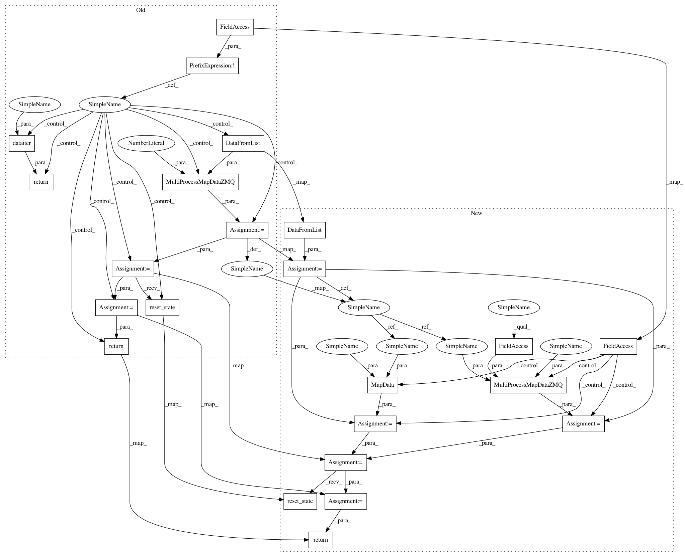

38a23b6a16a60808fc7c9da4619568aadb78f151,models/COCO.res50.384x288.CPN/network.py,Network,make_data,#Network#,76
Before Change
[batch_data[j][i] for j in range(len(batch_data))]))
yield ret
if not cfg.dpflow_enable:
return dataiter(train_data)
else:
from tfflat.data_provider import DataFromList, MultiProcessMapDataZMQ, BatchData
dp = MultiProcessMapDataZMQ( DataFromList(train_data), 10, Preprocessing )
dp = BatchData(dp, cfg.batch_size // cfg.nr_aug)
dp.reset_state()
dataiter = dp.get_data()
return dataiter
def make_network(self, is_train):
if is_train:
After Change
train_data, _ = d.load_data(cfg.min_kps)
from tfflat.data_provider import DataFromList, MultiProcessMapDataZMQ, BatchData, MapData
dp = DataFromList(train_data)
if cfg.dpflow_enable:
dp = MultiProcessMapDataZMQ(dp, cfg.nr_dpflows, Preprocessing)
else:
dp = MapData(dp, Preprocessing)
dp = BatchData(dp, cfg.batch_size // cfg.nr_aug)
dp.reset_state()
dataiter = dp.get_data()
return dataiter
def make_network(self, is_train):
if is_train:
In pattern: SUPERPATTERN
Frequency: 4
Non-data size: 23
Instances
Project Name: chenyilun95/tf-cpn
Commit Name: 38a23b6a16a60808fc7c9da4619568aadb78f151
Time: 2018-04-04
Author: chenyilun95@gmail.com
File Name: models/COCO.res50.384x288.CPN/network.py
Class Name: Network
Method Name: make_data
Project Name: chenyilun95/tf-cpn
Commit Name: 38a23b6a16a60808fc7c9da4619568aadb78f151
Time: 2018-04-04
Author: chenyilun95@gmail.com
File Name: models/COCO.res101.384x288.CPN/network.py
Class Name: Network
Method Name: make_data
Project Name: chenyilun95/tf-cpn
Commit Name: 38a23b6a16a60808fc7c9da4619568aadb78f151
Time: 2018-04-04
Author: chenyilun95@gmail.com
File Name: models/COCO.res50.256x192.CPN/network.py
Class Name: Network
Method Name: make_data
Project Name: chenyilun95/tf-cpn
Commit Name: 38a23b6a16a60808fc7c9da4619568aadb78f151
Time: 2018-04-04
Author: chenyilun95@gmail.com
File Name: models/COCO.res101.256x192.CPN/network.py
Class Name: Network
Method Name: make_data